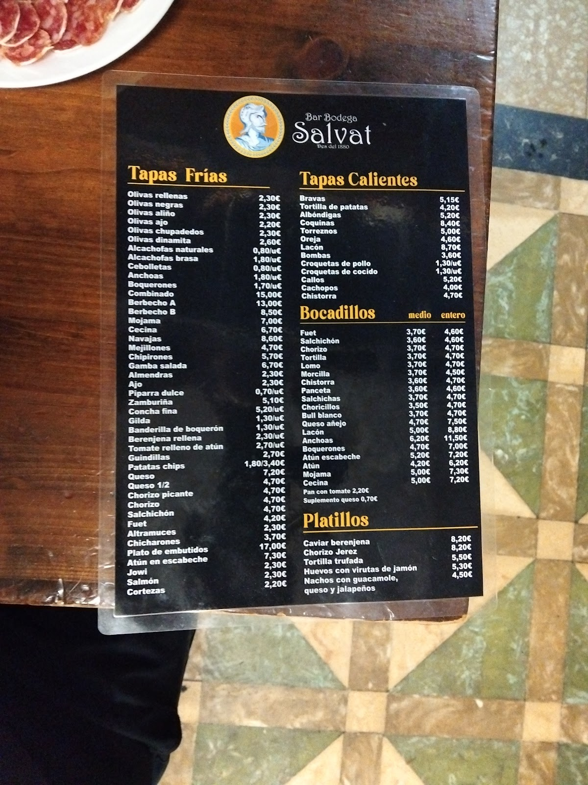

Una de esas bodegas de barrio con decoración tradicional, de las de toda la vida. Neveras-armario, barra metálica y baldosas de cerámica muy características de otra época.One of those neighbourhood bodegas with traditional decor, from another time. Larder fridges, a metal bar and the ceramic tiles that define an era.
Se ha mantenido vigente a lo largo de los años en el barrio de Sants. Ambiente sencillo con buenas tapas y bebida, buen vermut y conservas. Un sitio al que volver.It has kept going through the years in the Sants district. A simple atmosphere with good tapas and drinks, a fine vermouth and tinned seafood. A place to return to.
